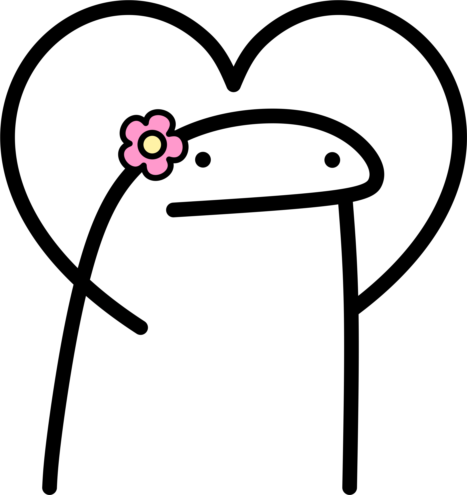

Um dia, quando a ternura for a única regra da manhã
um dia, quando a ternura for a única regra da manhã,
acordarei entre os teus braços. a tua pele será talvez demasiado bela.
e a luz compreenderá a impossível compreensão do amor.
um dia, quando a chuva secar na memória, quando o inverno for
tão distante, quando o frio responder devagar com a voz arrastada
de um velho, estarei contigo e cantarão pássaros no parapeito da
nossa janela. sim, cantarão pássaros, haverá flores, mas nada disso
será culpa minha, porque eu acordarei nos teus braços e não direi
nem uma palavra, nem o princípio de uma palavra, para não estragar
a perfeição da felicidade. - José Luís Peixoto

O amor é uma companhia.
Já não sei andar só pelos caminhos,
Porque já não posso andar só.
Um pensamento visível faz-me andar mais depressa
E ver menos, e ao mesmo tempo gostar bem de ir vendo tudo.
Mesmo a ausência dela é uma coisa que está comigo.
E eu gosto tanto dela que não sei como a desejar.
Se a não vejo, imagino-a e sou forte como as árvores altas.
Mas se a vejo tremo, não sei o que é feito do que sinto na ausência dela.
Todo eu sou qualquer força que me abandona.
Toda a realidade olha para mim como um girassol com a cara dela no meio. - Fernando Pessoa
De tudo ao meu amor serei atento
Antes, e com tal zelo, e sempre, e tanto
Que mesmo em face do maior encanto
Dele se encante mais meu pensamento.
Quero vivê-lo em cada vão momento
E em seu louvor hei de espalhar meu canto
E rir meu riso e derramar meu pranto
Ao seu pesar ou seu contentamento
E assim, quando mais tarde me procure
Quem sabe a morte, angústia de quem vive
Quem sabe a solidão, fim de quem ama
Eu possa me dizer do amor (que tive):
Que não seja imortal, posto que é chama
Mas que seja infinito enquanto dure. - Vinicius de Moraes